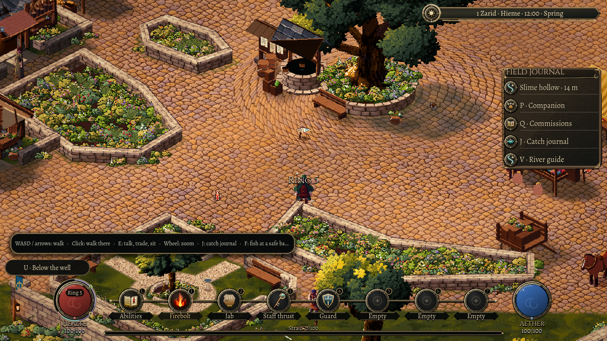
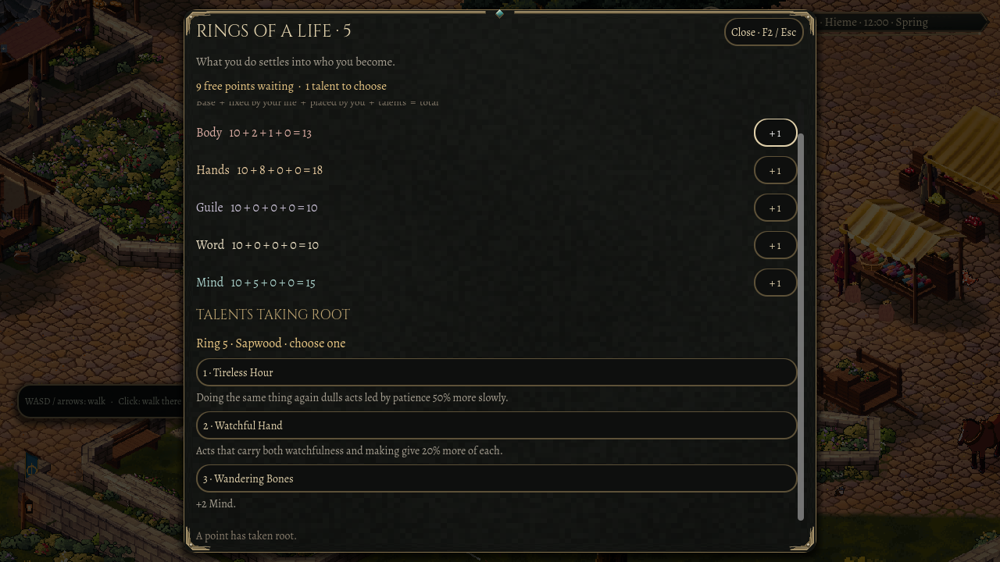

A life, written in rings
30 October 2026
A walk through unfamiliar ground, a fish brought to the bank, a spell shaped in a fight: the things you do begin to gather around you.
Sprawl already kept a record of what a character absorbed from their life. This update brings that growth into the playable town. Small motes rise from an act, circle the character, and settle inward. Their colours belong to the essence that was actually gained: a warm amber for work done with your hands, a cold blue for wonder, the familiar hues of the elements.
The motes stay dim and small enough to belong to the street. When a vessel is full, the excess glances away and scatters. The picture follows what the body could take in, including what it could not keep.
A ring around a life
A thin coloured ring now wraps the health vial. It fills clockwise as absorbed essence grows toward the next ring, carrying the colours of the experiences that made it. The count stays readable without filling the instruments with another experience total.
When a ring completes, the motes draw inward and a soft pulse marks the moment. Walking and the world carry on. A golden pip remembers points waiting to be placed; a small seed marks a talent still to choose.

Choosing what takes root
The ring opens a folio called Rings of a Life. Press F2, use the controller's View button, or tap the ring when you are safely out of a fight and on dry ground.
The five roots are Body, Hands, Guile, Word, and Mind. Each row shows the base, the points fixed by your life, the points you placed, and any contribution from talents. Free points are yours to spend. The folio records the choice and its new total.
Earned talent offers wait in the same place. Each card has a name and a description of what it changes. Choose one with a key, a controller, or a tap; the others in that offer fall away. Later offers remain waiting, and the talents already chosen stay listed below them.

These captures use a review character with accelerated earned progression, so the talent choice is visible. The decisions use the town's ordinary controls.
These are the existing body's progression choices, now available in the town. This update does not add a new combat scaling system to the five stat totals.
The road teaches too
Travel grows from time spent actually walking. Pressing against a wall earns no journey, and time spent in a panel adds no hidden walking practice. Partial progress survives Continue, so a short walk is still part of the next one.
The town also remembers first visits to small patches of ground, its actual grassland and woodland habitats, and nearby landmarks such as the old tree, shrines, bridges, and outlying workplaces. Reaching them gives wonder. The saved history keeps those discoveries remembered when you return.
This first integration belongs to the playable town and its outskirts. It does not claim that every place across the planned county can already be explored. It gives the places you can reach a lasting part in the character you are becoming.